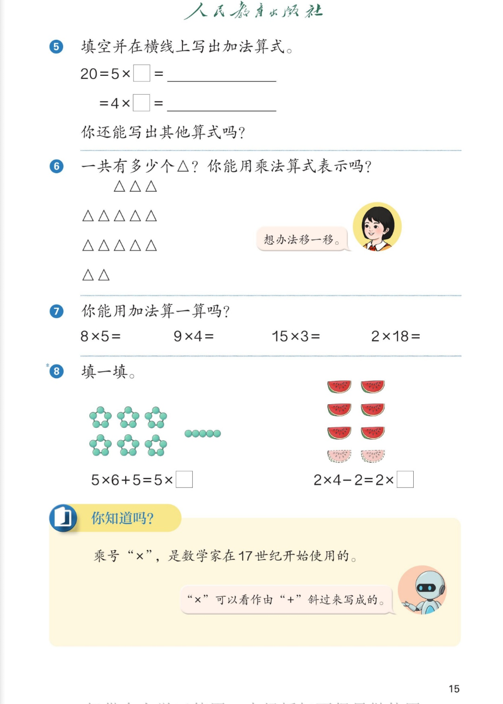

🍉 1~6的表内乘法 · 课本第 15 页 · 练一练 5~8 与你知道吗
人教版《数学》二年级上册 · 有声图文带读 · 先想后看解析
题数
6
认知
2
强化
3
拓展
1
本页重点
移多补少 + 几个几加减
🎧 分两步学：
① 解析教材图片
——纯声音读图，读到哪一块哪一块闪动提示；关键处先倒计时让你思考，再在图片下方给出解析并朗读。
② 分层提问练习
——六道分层题（认知 / 强化 / 拓展），先思考再展开解析、朗读参考答案；这一步不再回到图片。
也可以随时点任意一句话、图上任意一块单独听；点课本文字卡还会展开答案。
教材图片（点块听读，读到哪块哪块闪）

📖 人教版《数学》二年级上册 · 课本第 15 页 · 图片仅供个人学习，版权归人民教育出版社所有
🤔 想一想（点我可跳过）
课本的文字（点句子：听读 + 看答案）
课本第 5 题
填空并写出加法算式：20=5×□=＿＿；=4×□=＿＿
看答案 ▾
第一个空：
20=5×
4
→ 加法算式：
4+4+4+4+4=20
（5 个 4 相加）。
第二个空：
20=4×
5
→ 加法算式：
5+5+5+5=20
（4 个 5 相加）。
课本第 5 题
你还能写出其他算式吗？
看答案 ▾
参考：
20=2×
10
（10 个 2 相加）；20=10×
2
（2 个 10 相加）；还有 20×1=20、1×20=20。
🌈 只要乘积是 20，写得合理都算对
课本第 6 题
一共有多少个 △？你能用乘法算式表示吗？
看答案 ▾
先数：
每行 3、5、5、2 个，每行不一样多，
不能直接写乘法
。
总数：
3+5+5+2=
15
。
移一移：
把第一行的 3 个和第四行的 2 个
合并成一行 5 个
→ 变成 3 行、每行 5 个。
乘法算式：
3×5=15
（3 个 5 相加）。
小女孩的提示
想办法移一移。
看答案 ▾
移多补少的思路：
每行个数
同样多
才能写成乘法。
把散的行合并或移动，凑成
每行 5 个、共 3 行
→ 3×5=15。
课本第 7 题
你能用加法算一算吗？8×5= 9×4= 15×3= 2×18=
看答案 ▾
8×5：
5 个 8 相加 → 8+8+8+8+8=
40
；
9×4：
4 个 9 相加 → 9+9+9+9=
36
；
15×3：
3 个 15 相加 → 15+15+15=
45
；
2×18：
18 个 2 相加 →
36
（也可以想 2 个 18 相加：18+18=36，
更快
！）
课本第 8 题
填一填：5×6+5=5×□；2×4-2=2×□
看答案 ▾
左题：
5×6 是 6 个 5，再加 1 个 5 →
7 个 5
→ 填
7
，5×7=35。
右题：
2×4 是 4 个 2，减 1 个 2 →
3 个 2
→ 填
3
，2×3=6。
你知道吗
乘号"×"，是数学家在 17 世纪开始使用的；"×"可以看作由"+"斜过来写成的。
看答案 ▾
小知识：
乘号"×"诞生于
17 世纪
。把加号"+"
斜过来
就是"×"——因为
乘法本来就是特殊的加法
（加数相同的加法）！这个符号的设计藏着乘法的本质。
分层提问练习（先想后看解析）
🔢
认知
20=5×□，□填几？加法算式怎么写？
看解析
🤔 想一想
解析：
填 4：
20=5×4 → 4+4+4+4+4=20（5 个 4 相加）
也可填：
20=4×5 → 5+5+5+5=20（4 个 5 相加）
➕
认知
用加法算一算：8×5 和 9×4 各等于多少？
看解析
🤔 想一想
解析：
8×5：
8+8+8+8+8=
40
（5 个 8 相加）
9×4：
9+9+9+9=
36
（4 个 9 相加）
🔺
强化
三角形题：为什么不能直接写乘法？移一移后怎么写？
看解析
🤔 想一想
解析：
不能直接乘的原因：
每行 3、5、5、2 个，
每行不一样多
总数：
3+5+5+2=
15
移一移：
3 个+2 个合成一行 5 个 → 3 行每行 5 个
乘法算式：
3×5=15
💡 先把"每份"变得同样多，才能用乘法
🧠
强化
5×6+5=5×□ 和 2×4-2=2×□ 的道理是什么？
看解析
🤔 想一想
解析：
5×6+5：
6 个 5
加
1 个 5 =
7 个 5
→ 填 7，得 35
2×4-2：
4 个 2
减
1 个 2 =
3 个 2
→ 填 3，得 6
💡 加 1 份个数加一，减 1 份个数减一
⚡
强化
15×3 和 2×18 用加法算麻烦吗？说说你的巧办法。
看解析
🤔 想一想
解析：
15×3：
3 个 15 相加，15+15+15=
45
，不算麻烦
2×18：
18 个 2 相加要写很长；
巧办法
：想成 2 个 18 相加，18+18=
36
💡 乘数交换位置积不变——挑"份数少"的来加更快
🚀
拓展
把乘号的小故事讲给家人听，再提出你还想知道的一个问题。
看解析
🤔 想一想
解析（开放题）：
可以这样讲：
"×"17 世纪才出现，它是把"+"斜过来写成的——因为乘法就是加数相同的加法。
可以继续问：
乘号是谁发明的？除号"÷"又是怎么来的？
🌈 讲清楚"×由+变来 + 乘法是特殊加法"就算讲明白了
① 解析教材图片
② 分层提问练习
⏹ 停止
纯声音 + 高亮跟随 · 想好才出解析
← 返回导航